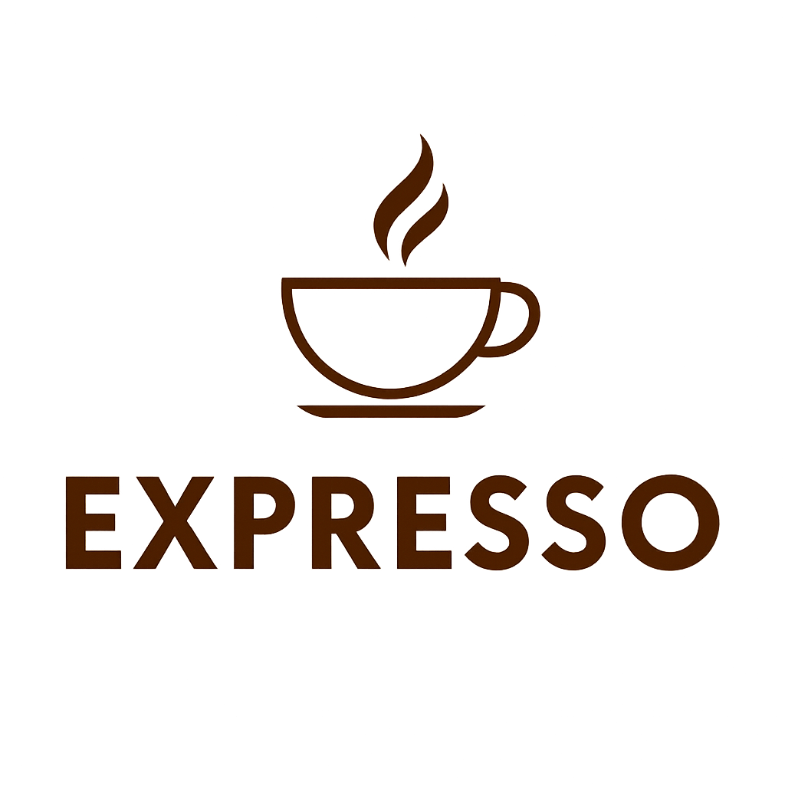

Welcome to Expresso! We believe coffee is not just a drink, it’s an experience to enjoy every day.

Behind Expresso stands a passionate coffee enthusiast who combined technology with tradition to create a place where every customer feels at home with a perfect cup of coffee.
Expresso is a unique digital coffee platform born from a blend of technology, a love for espresso, and a desire to bring a premium coffee experience into everyday homes. The site was developed by a team of third-year Software Engineering students as part of a final project in a Project Management course. Our goal wasn't just to build a functional system - it was to create a meaningful, high-quality product that people would truly enjoy using.
Whether you're a casual coffee drinker or a true enthusiast, Expresso offers a rich selection of coffee machines, flavorful capsules, milk frothers, and complementary accessories - all carefully selected to deliver a perfect cup, every single time. The site is designed to provide a seamless shopping experience, with intuitive navigation, smart product filtering, a user - friendly cart, and a smooth checkout process.
Expresso is more than a project - it’s a hands - on journey in system development, product thinking, teamwork, and user experience design. From concept to code, we worked with passion, precision, and a touch of caffeine to create something we’re proud to share.